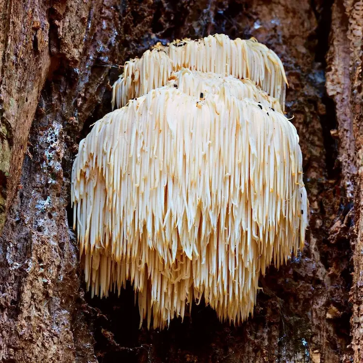

Fly Agaric
Amanita muscaria
- Native to northern hemisphere forests
- Hallucinogenic and toxic if eaten raw
- Iconic red cap with white spots
- Featured in fairy tales and video games
Green Pepe
Mycena chlorophos
- Found in subtropical Asia and the Pacific
- Bioluminescent (glows green in the dark)
- Grows on decaying wood
- Glow fades after a few hours once picked
Devil's fingers
Clathrus archeri
- Native to Australia, now found worldwide
- Emits a foul odor (smells like rotting meat)
- Bright red, finger-like arms emerge from an egg
- Attracts flies to spread spores

Lion's mane
Hericium erinaceus
- Grows on dead or dying hardwood trees
- Edible and used in traditional Chinese medicine
- Resembles a white pom-pom or shaggy mane
- Studied for potential nerve-regenerating properties
Indigo milk cap
Lactarius indigo
- Found in eastern North America and Central America
- Exudes blue "milk" when cut
- Edible, with mild flavor
- Color fades when cooked